מה ביקשת, איך יצאתי לדרך, מה נבנה הלילה ועובד באפליקציה, איך נקבע מה נחשב "מרחב אמנות", איך המפה מתעדכנת כל חודש והתערוכות כל יום, ורעיונות לעיצוב הסקשן ולעיצוב המבנים בתוך המפה.
נכתב על ידי Claude. כל המספרים במסמך נקראים מהנתונים שהמפה עצמה משתמשת בהם (data/art), ברגע בניית המסמך.
| ביקשת | מה נבנה | מצב |
|---|---|---|
| עיצוב נקי, אלגנטי, צבעוני ואמנותי לסקשן המפה, בלי הכותרת והכיתוב הקודמים | מפה תלת‑ממדית על כל המסך בגווני נייר, צבע לכל סוג מקום, "כתמי צבע" סביב מקומות עם תערוכה, וגיליון רך מתחת עם שם העיר בגופן סריף, מספרים ורשימה | באפליקציה |
| חיבור המפה לכל מרחבי התרבות באמנות בישראל, עם סינון מדויק ולא "סתם מוזיאונים" | 132 מקומות משלושה מקורות (רשימה מאוצרת מעולם האמנות, Wikidata, OpenStreetMap), עם כללי סינון כתובים; 308 מועמדים נפסלו, כל אחד עם הסיבה | באפליקציה |
| כל מבנה בתלת‑ממד, "מגניב ומיוחד" | הבניין האמיתי של כל מקום מ‑OpenStreetMap (104 מתוך 132), מורם בצבע הסוג שלו מעל עיר חיוורת ונמוכה; כמה גלריות באותו בניין נערמות כקומות צבעוניות | באפליקציה |
| עדכון המקומות פעם בחודש (חדשים, נסגרים) | עבודה אוטומטית בשרת ב‑1 לכל חודש; מקום חדש מסומן, מקום שנעלם מסומן "לא מאומת" חודש אחד ואז יורד; דוח שינויים | רץ |
| עדכון יומי של התערוכות | עבודה אוטומטית כל בוקר שקוראת את אתרי המקומות עצמם, ופתיחות ושיחי גלריה מלוח אירועים ציבורי; דוח בריאות לכל מקור | רץ |
| לראות במפה מה מוצג | בכל מקום: "On now", "Coming up", "Talks and openings", עם תאריכים וקישור למקור | באפליקציה |
| בעתיד: לעקוב אחרי גלריות ומוסדות | כפתור Follow בכל מקום, ו"Places you follow" בראש הרשימה (נשמר בטלפון; יעבור לחשבון כשיהיה) | גרסה ראשונה |
| בעתיד: לראות אילו אמנים באפליקציה מציגים, ואם אתה עוקב אחריהם | התאמה בין שמות האמנים בתערוכות לאמני Open Studio; "you follow" בולט. ייכנס לפעולה מלאה כשלאמנים יהיה גם שם בעברית בפרופיל | תשתית מוכנה |
| PDF עם רעיונות עיצוב ומה נעשה | המסמך הזה | כאן |
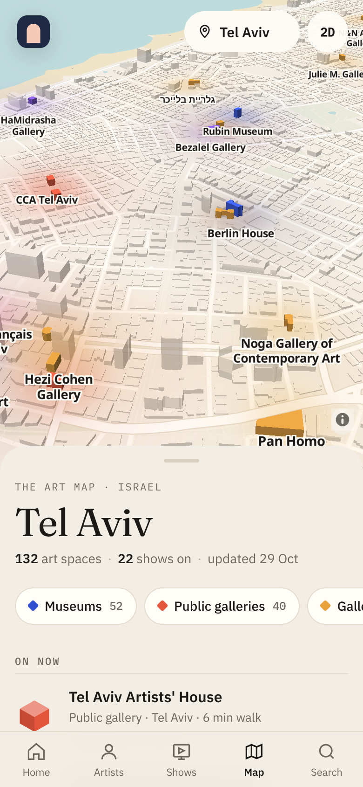
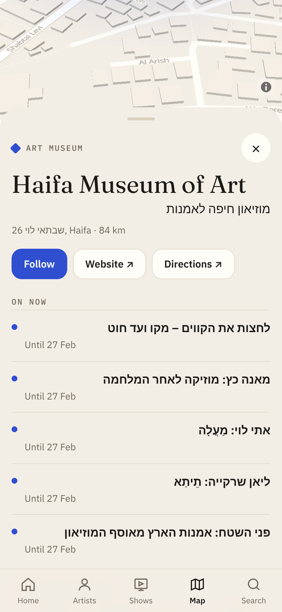
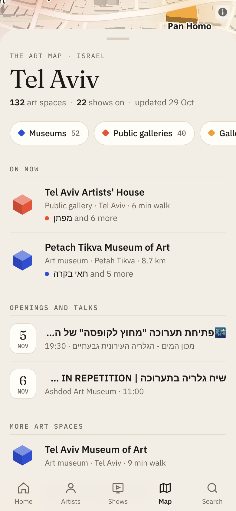
ב‑OpenStreetMap "גלריה" היא גם מסגרייה, חנות לעיצוב הבית או סטודיו לצילומי פספורט, ו"מרכז אמנויות" הוא לרוב היכל תרבות. לכן הכלל הוא: קודם עולם האמנות, אחר כך המפה.
| סיבה | כמה |
|---|---|
| museum (untyped), not art | 130 |
| name says not art | 57 |
| arts centre without art in its name | 31 |
| studio or art shop (shown only if curated) | 26 |
| public only on OpenStreetMap, not curated (galleries there include framers and decor shops) | 22 |
| centre only on OpenStreetMap, not curated (galleries there include framers and decor shops) | 16 |
| museum (history), not art | 15 |
| museum (open_air), not art | 8 |
132 מקומות; 80 מהרשימה המאוצרת, 52 מ‑Wikidata ו‑OSM. 104 עם בניין.
| מקור | תערוכות | אירועים | מצב |
|---|---|---|---|
| haifa-museum | 5 | 2 | ok |
| tikotin | 1 | 0 | ok |
| negev-museum | 3 | 0 | ok |
| petach-tikva | 6 | 0 | ok |
| artists-house-tlv | 7 | 0 | ok |
| cca | 0 | 0 | nothing found |
| gutman | 0 | 0 | nothing found |
| rubin | 0 | 0 | nothing found |
| ilana-goor | 0 | 0 | nothing found |
| design-holon | 0 | 0 | nothing found |
| ashdod | 0 | 0 | nothing found |
| israel-museum | unreachable: URLError | ||
| tama | 0 | 0 | nothing found |
| ein-harod | unreachable: HTTPError | ||
| ramat-gan | unreachable: URLError | ||
| jerusalem-artists-house | 0 | 0 | nothing found |
| makore | 6 | ok |
22 תערוכות ב‑5 מקומות, 8 אירועים. 6 מתוך 17 מקורות נקראו.
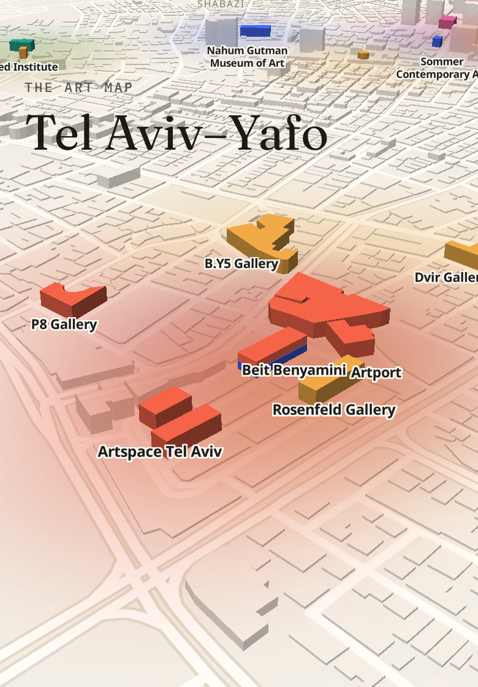
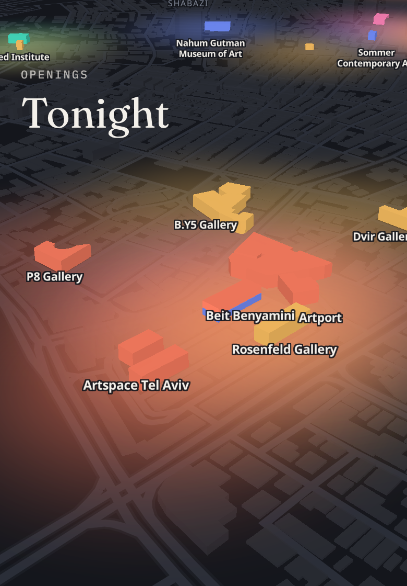
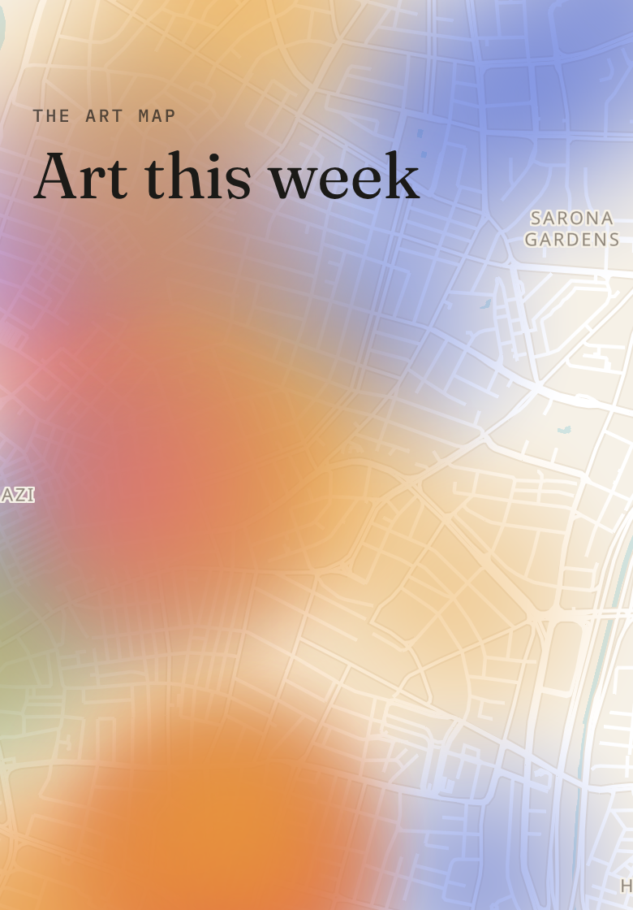
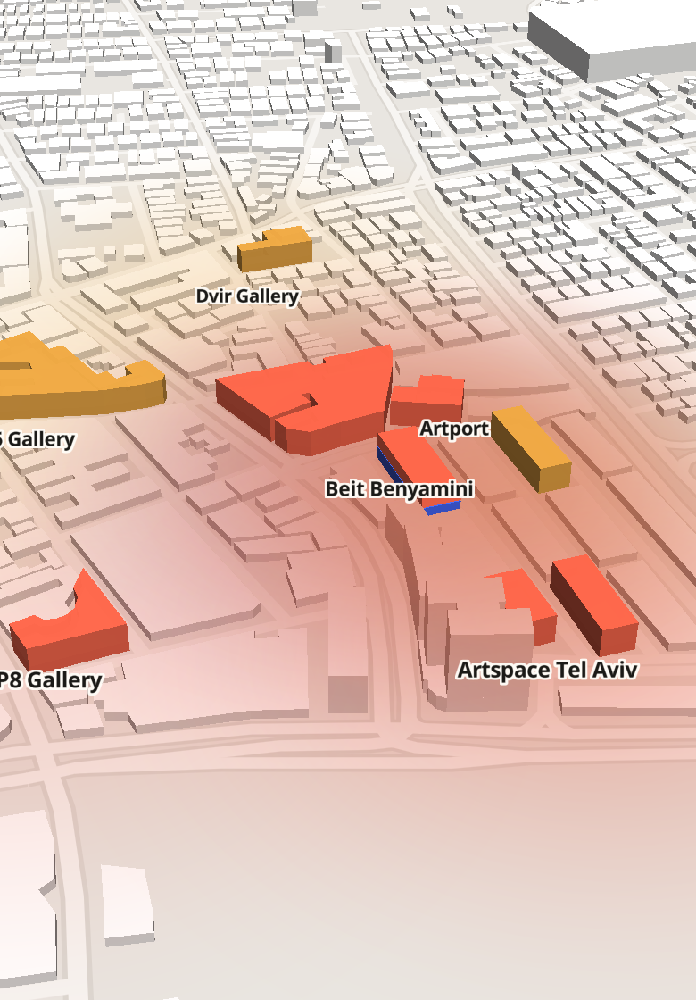
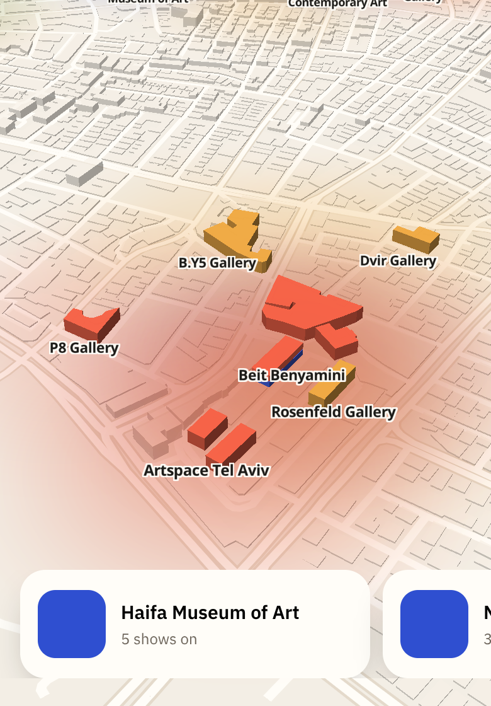
המלצה: אטלס כברירת מחדל (נקי, קריא, מכבד את האמנות), ו"ערב פתיחה" אוטומטית אחרי 18:00 בימים שיש בהם פתיחות. צבעי מים מתאים לשיתוף ולתמונת "השנה שלך באמנות".
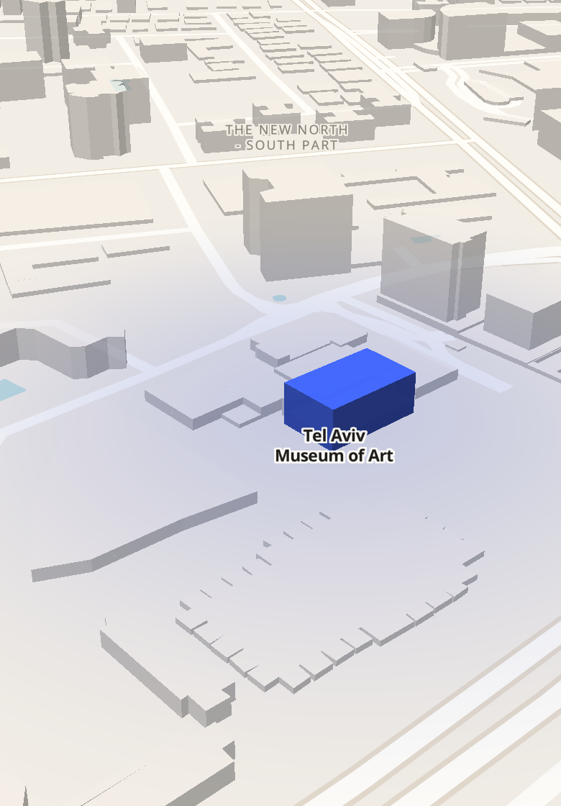
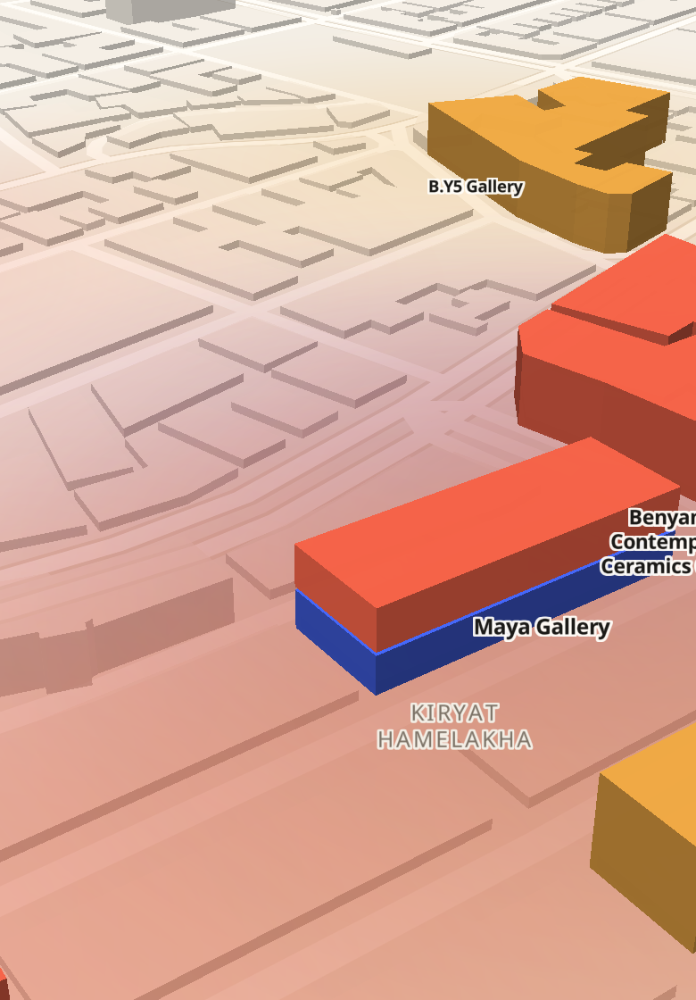
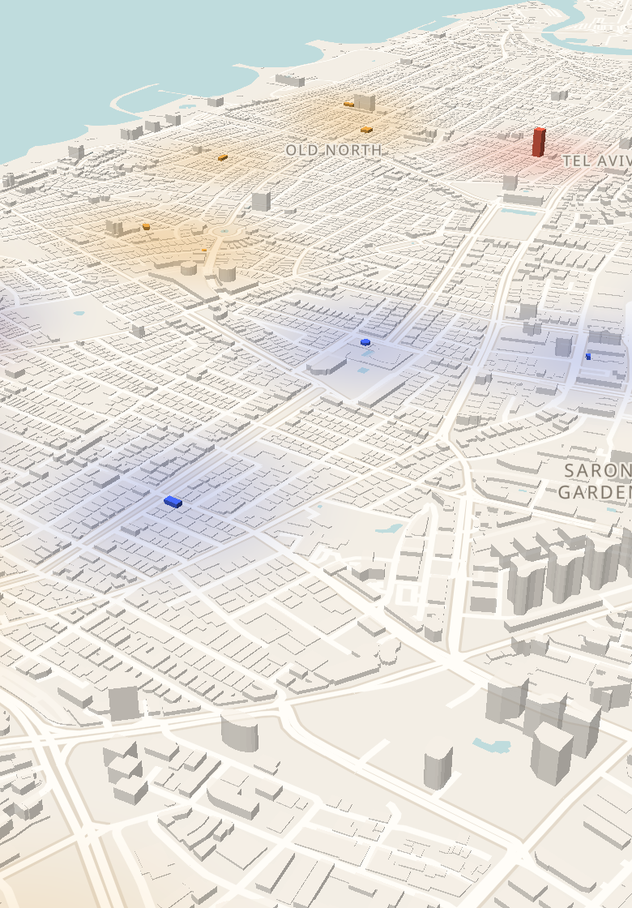
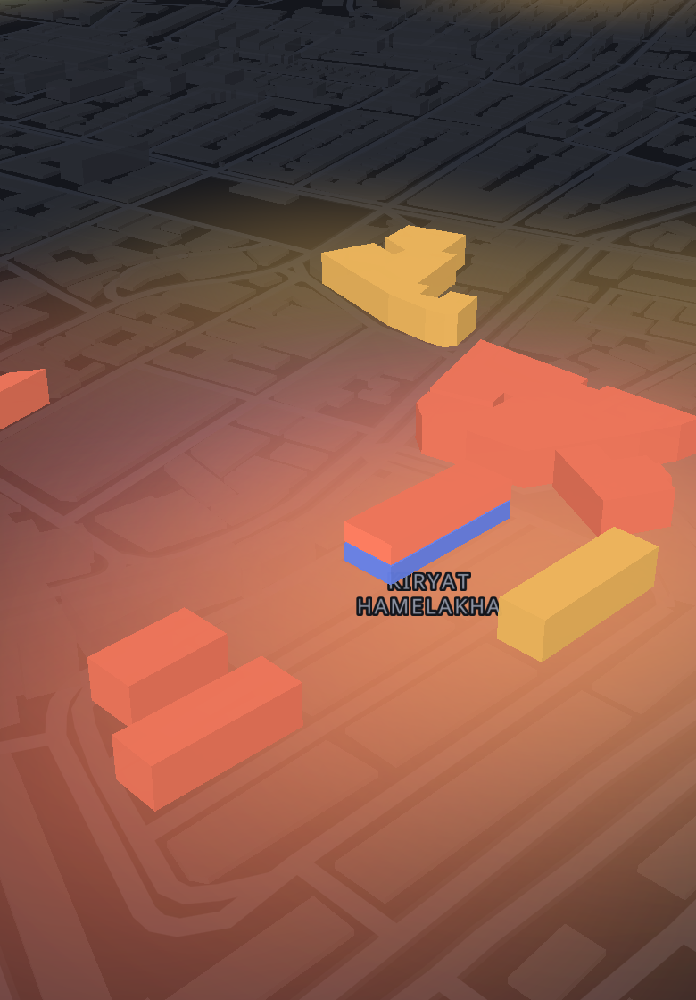
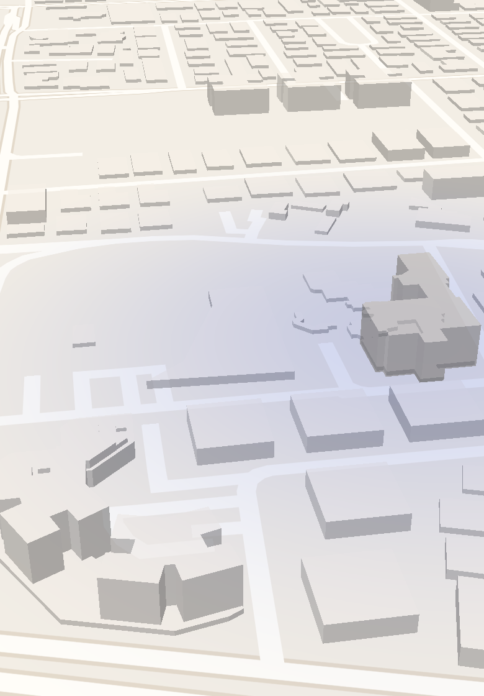
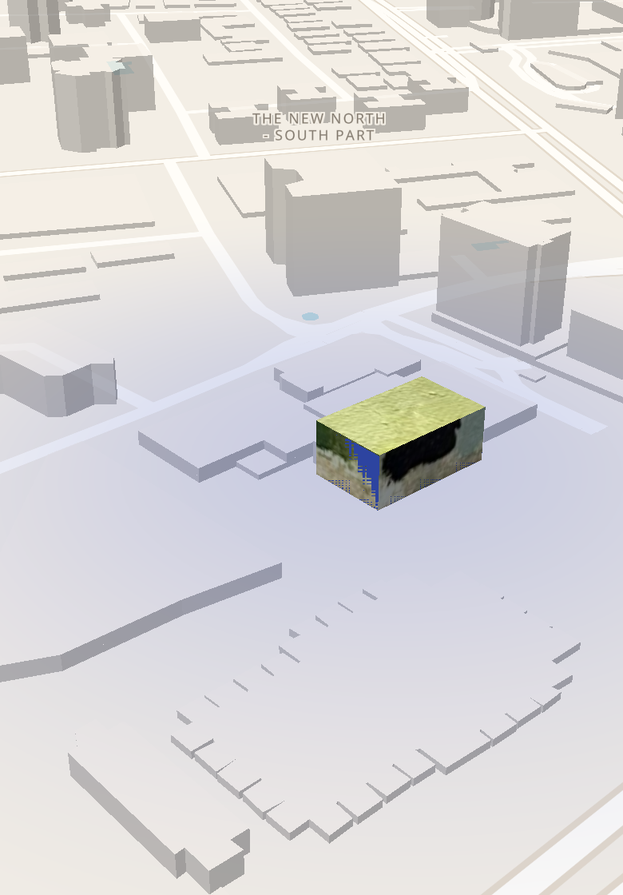
עוד רעיונות שלא צוירו: גגות בצבעי התערוכה (פלטת הצבעים של היצירות מחולצת אוטומטית); טבעות פתיחה שמתרחבות סביב מקום שיש בו פתיחה הערב; דגמים מיוחדים לבניינים אייקוניים (המשולשים של מוזיאון תל אביב, הביתנים של מוזיאון ישראל); שביל שמחבר את המקומות של סיור גלריות ערב.
| צעד | למה |
|---|---|
| להשלים כתובות ל‑37 המקומות המאוצרים שלא נמצאו | רוב הגלריות המסחריות בתל אביב לא מסומנות ב‑OSM; עם כתובת הן ייכנסו בהרצה הבאה |
| להוסיף קוראים לאתרים שעוד לא נקראים (מוזיאון תל אביב, CCA, גוטמן, אשדוד…) | חלקם בונים את העמוד ב‑JavaScript; צריך קורא לכל אחד, או API |
| שותפות עם ערב רב | הזנה מסודרת של כל הפתיחות, ברשות |
| הגלריה מעדכנת בעצמה | בשלב ההרשמה (הדוח המוצרי): גלריה מוסיפה תערוכה בשתי דקות, והיא על המפה |
| שם בעברית לכל אמן בפרופיל | כדי ש"אמנים שאתה עוקב אחריהם מציגים כאן" יעבוד גם בתערוכות מאתרים בעברית |
| Follow לחשבון | היום נשמר בטלפון; עם חשבונות יעבור בין מכשירים ויאפשר התראה על פתיחה |
| ספק אריחים עם מפתח לפני השקה ציבורית | OpenFreeMap חינמי ובלי מגבלה מוצהרת, אבל כדאי חלופה מוכנה |